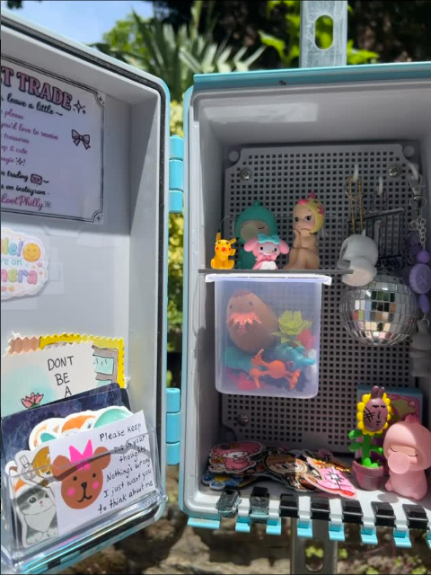

What is Trinket Trading?
Where to Trade
Get Inspired

How to make the most of your trinket trading experience:
If you don't have trinkets at home you would like to trade in, there's no need to buy anything new! It's fun to go trinket hunting at thrift stores, flea markets, yard sales, etc. Think of the trinket trade next time you're out thrifting and see something neat.
Remember this is a place to share crafts too and the perfect excuse to try something new! Do you think it looks fun to sew a little felt guy, make a clay figurine, or make a friendship bracelet that says anything you want? Try it! It doesn't have to be perfectly made, you just need to have fun making it. Make a couple and share one!